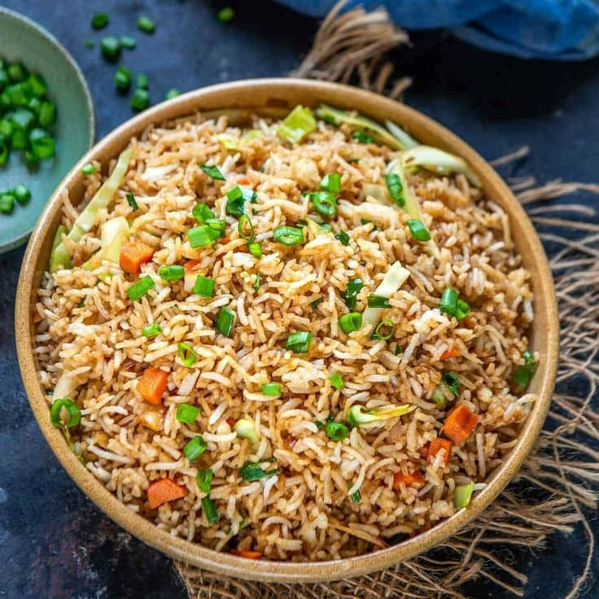

Fried Rice
Home

Description
African fried rice is a colorful and tasty rice dish made with vegetables,seasonings,and sometimes liver or chicken.it is simple,and perfect for family meals or special occasions.
Ingredients
- Rice
- Carrot
- Green beans
- Sweet corn
- Green pepper
- Spring onions
- Liver(optional)
- Vegetable oil
- Curry powder
- Seasonings cubes
- Salt
- Water
Steps
- Wash the rice.
- Cook the rice and set aside.
- Stir-fry the vegetables with oil and seasonings.
- Add the rice and mix well.
- Cook for a few minutes and serve hot.